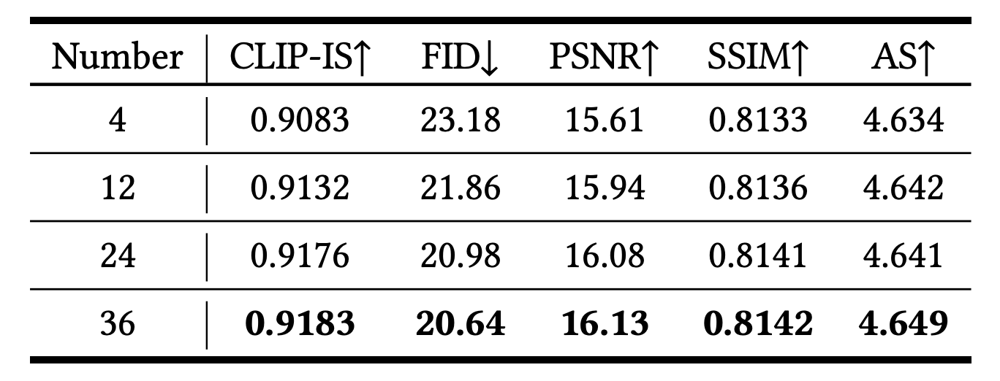

Cobra is a novel efficient long-context fine-grained ID preservation framework for line art colorization, achieving high precision, efficiency, and flexible usability for comic colorization. By effectively integrating extensive contextual references, it transforms black-and-white line art into vibrant illustrations.
Abstract
The comic production industry requires reference-based line art colorization with high accuracy, efficiency, contextual consistency, and flexible control.
A comic page often involves diverse characters, objects, and backgrounds, which complicates the coloring process.
Despite advancements in diffusion models for image generation, their application in line art colorization remains limited, facing challenges related to handling extensive reference images, time-consuming inference, and flexible control.
We investigate the necessity of extensive contextual image guidance on the quality of line art colorization. To address these challenges, we introduce Cobra, an efficient and versatile method that supports color hints and utilizes over 200 reference images while maintaining low latency.
Central to Cobra is a Causal Sparse DiT architecture, which leverages specially designed positional encodings, causal sparse attention, and Key-Value Cache to effectively manage long-context references and ensure color identity consistency.
Results demonstrate that Cobra achieves accurate line art colorization through extensive contextual reference, significantly enhancing inference speed and interactivity, thereby meeting critical industrial demands. Code and model will be released.
Method
A. The overview of Cobra.
This figure depicts the framework of Cobra, which utilizes a large collection of retrieved reference images to guide the colorization of comic line art. The framework effectively manages an arbitrary number of contextual image references through localized reusable positional encoding, ensuring appropriate aspect ratios and resolutions. Additionally, the causal sparse DiT architecture processes long contextual references, enhancing identity preservation and color accuracy while reducing computational complexity. The integration of optional color hints further ensures user flexibility, culminating in high-quality coloring that is highly suitable for industrial applications.
B. Illustration of the transition from Full Attention to Causal Sparse Attention. This figure highlights the reduction in computational complexity achieved by excluding pairwise calculations among reference images. Additionally, the application of unidirectional causal attention, along with the use of KV-Cache, further enhances computational efficiency while ensuring effective transmission of essential color ID information.
Compare Cobra with Previous Works
A. Qualitative results of line art colorization, highlighting how Cobra outperforms other methods by accurately preserving color IDs and providing high-quality results, even in complex scenarios.
B. Qualitative results of line art with shadows, showcasing Cobra's superior ability to maintain color fidelity and enhance detail, demonstrating its robustness and effectiveness in real-world applications.
Qualitative Results
A. Quantitative comparison of Cobra with state-of-the-art comic colorization methods, including CLIP-IS, FID, PSNR, SSIM, and AS metrics for both line art and line art with shadows.
B. Impact of reference image count on the performance of Cobra in line art colorization, demonstrating consistent improvements as the number of reference images increases.

C. Evaluation of inference time efficiency for Full Attention, Sparse Attention, and Causal Sparse Attention (with KV-Cache) across different counts of reference images.
More qualitative results are shown in the paper.
Additional results
A. Interactive line art colorization
B. Line Art Colorization
C. Line Art with Shadows Colorization
D. Line Art Video Colorization
BibTex
@misc{zhuang2025cobraefficientlineart,
title={Cobra: Efficient Line Art COlorization with BRoAder References},
author={Junhao Zhuang and Lingen Li and Xuan Ju and Zhaoyang Zhang and Chun Yuan and Ying Shan},
year={2025},
eprint={2504.12240},
archivePrefix={arXiv},
primaryClass={cs.CV},
url={https://arxiv.org/abs/2504.12240},
}
DISCLAIMER
ALL IMAGES, VIDEOS, AND OTHER MATERIALS PRESENTED ON THIS PAGE ARE USED SOLELY FOR ACADEMIC AND RESEARCH PURPOSES.
 Paper
Paper Code
Code